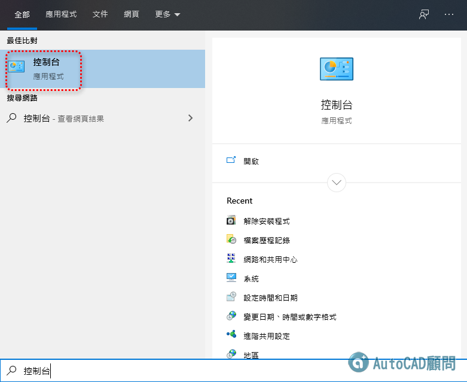
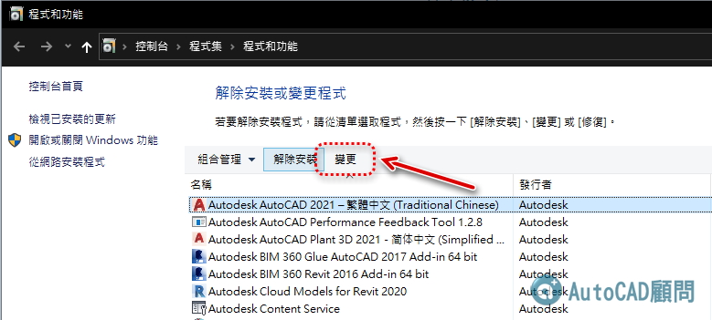
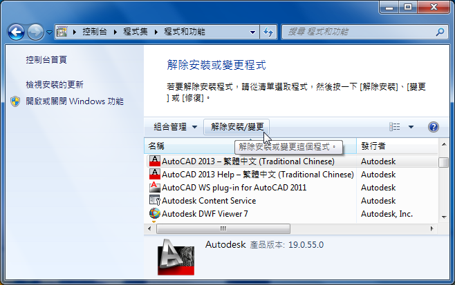
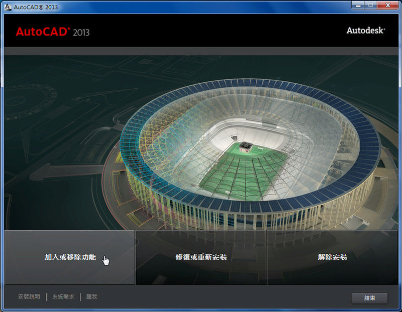
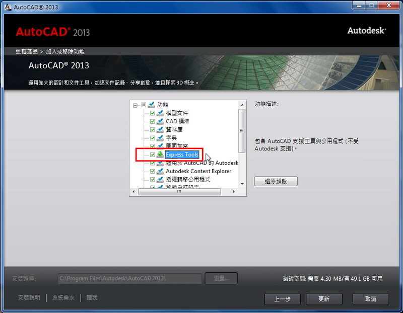
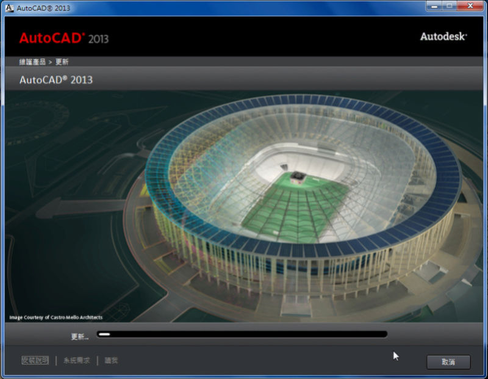
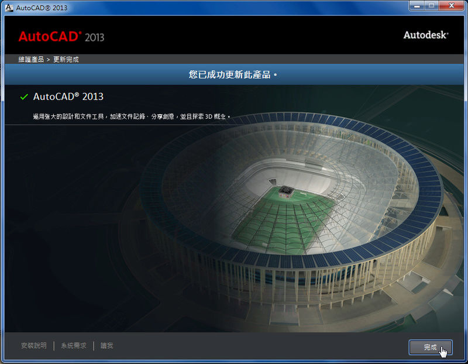

論壇大補帖 EXPRESS 中文化，解壓密碼使用CAD版本，例如：AutoCAD 2027 版本
解壓密碼：AutoCAD顧問_2027ExpressC
注意：需要放入原先安裝AutoCAD之光碟，方可進行補安裝步驟！
步驟一:控制台

步驟二:AutoCAD 20** >> 解除安裝/變更 (或選擇其他CAD版本)

AutoCAD 2013 >> 解除安裝/變更[/b] (或選擇其他CAD版本)

步驟三:加入或移除功能

步驟四:打勾Express tools

步驟五:更新中

步驟六:完成更新

※※※若是有出現Express功能表群組，但仍然無法使用請參考以下文章補掛入方式※※※
[分享]AutoCAD 2012功能區沒有Express Tools頁籤，應如何排除？
👇其他延伸文章：